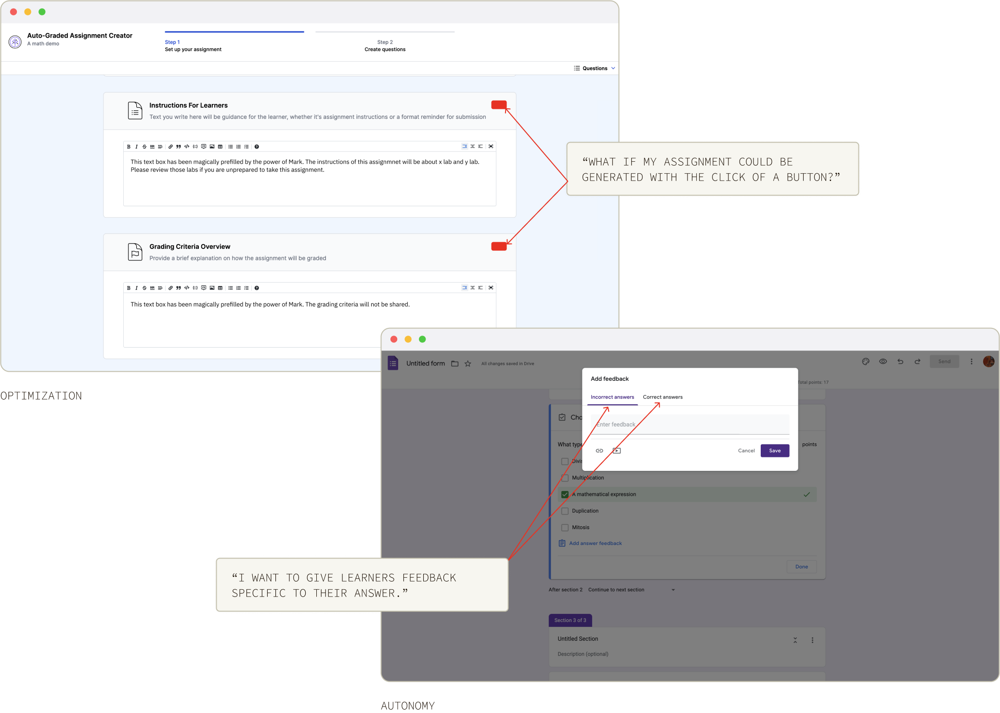
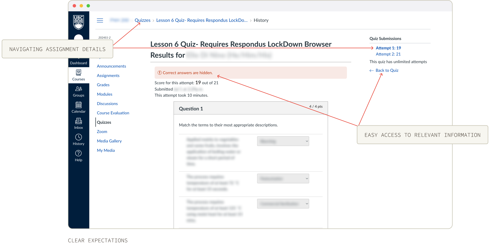
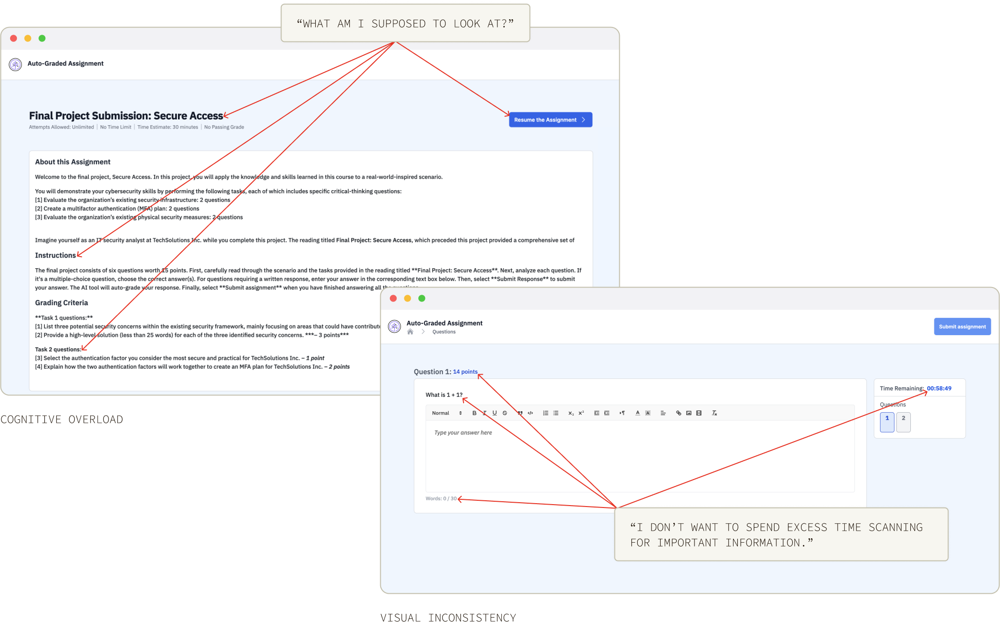

Mark is an AI-powered marking assistant that helps both authors and students in the assignment creation and completion process.
Contribution
- Oversee development effort
- Conduct user research and testing
- Design and prototyping following user needs
- Maintain communication with stakeholders to ensure the product meets customer needs
Tools & skills
- Figma
- User research
- User testing
Info+
- 3 months @IBM, 2024
Hold on, how did we get here?
The project was presented to the team as an improvement project that was low-effort, low-stakes, and low-change that didn’t require new user research or a design overhaul. However, very soon after familiarizing myself with the product, I realized that Mark was largely non-functional.
What's wrong
Visually, Mark was not the most pleasing: the lack of visual hierarchy made it hard to extract relevant information for both authors and learners, the layout of individual parts did not follow a natural compositional flow, and the product did not follow a consistent design system.
Beyond aesthetics, the user experience was hindered both in terms of design and in terms of bugs—unclear usage and capabilities of Mark, a broken point-calculation system, long waiting times for generated feedback, etc.
Furthermore, the product was not on par with existing competitor products. The stakeholders also wanted this Mark improvement project to be completed on a quick timeline.
Thus,
The team formulated a plan with this new information: while I conducted user research and upgraded the user interface, the development team would fix the existing bugs and apply YADS (the new design system) to reusable components.
The user interviews for Mark were split into two divs. The first part was about what an AI-powered marking assistant would look like, and the second part asked for users’ feedback on the existing product.
What do authors need and want when creating an assignment with assistance from an AI-powered marking assistant?
Optimization
Authors want Mark to make the assignment creation and marking process more efficient, perhaps by generating a template for an assignment based off of existing content or by providing ideas on the direction of an assignment.
Autonomy
Authors want to be able to control what Mark can and cannot do for learners. For example, what the feedback will be, how elaborate Mark’s feedback for learners should be, and the whether or not the correct answer is displayed.
Accuracy
Authors want to know that Mark is giving accurate feedback through testing and through specifying certain parameters within Mark.
How does current Mark live up to authors’ expectations? (Warning: it doesn’t)
In other words, what are authors’ current pain points when creating an assignment with Mark?
Lack of clarity
The instructions for authors to create assignments with Mark were unclear. Authors commonly wondered what instructions were for Mark and which were for learners.
Inadequate visual indicators
There were virtually no visual indicators that signalled to authors that they missed a field or had filled something out incorrectly. Could you point out why you couldn’t save your work using the screenshot here?
Poor quality
The product had discreet but breaking bugs, which were a result of a lack of quality assurance testing.
Thus, we can concluded that
Authors seek to speed up their workflow and want to be confident that their AI-powered assistant is providing their best for learners.
Hey learners! What does a good assignment-taking experience look like?
Clear expectations
Learners want to know specific assignment details and whether or not they can expect to see it. For example, how an assignment is being graded, how questions are being displayed, how they are being marked, and more. If an author chooses not to display certain information, learners want to know that it was specified as such.
Good visual hierarchy
Usually assignments are filled with relevant information scattered everywhere, so learners want to be able to quickly view for the most important information on the page.
Relevant feedback
If feedback were provided, learners want to know what type of feedback they can expect. For instance, if the feedback will contain relevant course content, individual scores for each question, the correct answer(s), etcetera.
How do learners feel about current mark?
Cognitive overload
Learners said that they found it hard to distinguish what they should be looking at when they first entered the assignment, which requires the learner to conduct mental work before they enter an assignment that may be timed or graded.
Visual inconsistency
The product did not have consistent font sizes or great accessibility, making it hard for learners to find information or to focus on the assignment.
Limited functionality
Mark did not have features that learners would want to see in a basic assignment-taking product, such as flagging questions, the ability to view feedback after questions are submitted rather than immediately, and a functioning countdown timer.
The revamped Mark experience
Clarity hits
For authors, efficiency is key, and clarify definitely contributes to a seamless workflow. Providing authors with minor additions that clarify the purpose of their input really enhances the overall experience. Through doing this, we ensure the highest quality content is delivered to learners. For learners, their assignment and instructions are now clearer since the author is able to create more accurate information tailored for learners.
Engaging experience
By utilizing a more engaging and friendly language that asked the authors and learners to complete their tasks at each step, Mark was able to achieve a higher satisfaction and engagement rate. The previously dull instructions became an interactive process that felt more like talking to an assistant for all users.
Seamless optimization
Mark has a lot of capabilities now, including helping authors generate assignment content, and we ensured that authors can decide whether or not they want the help of Mark. We want authors to know that they are in control and Mark is simply an assistant.
Scalable and adaptable future
On the other end of the screen, the product was now easier to scale. The layout and content was group in a more methodological way instead of being restricted to one section that contained all the information. In combination with YADS, Mark has a bright future.